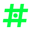
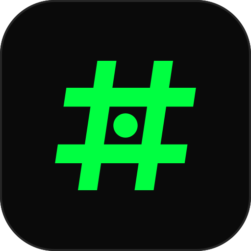

Every line of code, traced back to its issue.
SymbolThe hash is how IDD ties work together. A branch is fix/42-…, a commit ends in (#42), a PR says Closes #42. The mark makes that #N reference the brand, and puts the issue itself, as a dot, in the center cell: the single source of truth everything else is built around.
ConstructionEvery edge follows one of two directions, horizontal or a 0.15 slant, so the mark reads as engineered rather than drawn. The bars are 7 units on a 64-unit grid, and the center cell is a 14-unit square holding a 9-unit dot. At 16px, a pixel-snapped favicon redraw takes over.
ColorDark-first, like the terminal it lives in. Neon #00FF41 is reserved for the mark and for highlights (14.5:1 on #0A0A0A); it never fills a background and never sits on light surfaces (1.3:1). On light backgrounds, the mark goes monochrome #0A0A0A.
TypographyThe IDD Stack logo spells IDD in a drawn wordmark, not a typeset one: 7-unit stems match the hash bars, the D bowls are true semicircles echoing the dot, and the cap height sits exactly between the two rails, so mark and name share one grid. Inter and JetBrains Mono carry everything else, matching the site.


Custom-drawn wordmark: 7-unit stems, cap height = hash rails
colors: { brand: { primary: '#0A0A0A', surface: '#111111', border: '#262626', muted: '#A1A1A1', text: '#FAFAFA', accent: '#00FF41' } }, fontFamily: { sans: ['Inter', 'system-ui', 'sans-serif'], mono: ['"JetBrains Mono"', 'ui-monospace', 'monospace'] }
@8× PNG exports sit alongside each SVG (logo-*.png, favicon.png).
<picture> <source media="(prefers-color-scheme: dark)" srcset="assets/logo/logo-white.svg"> <source media="(prefers-color-scheme: light)" srcset="assets/logo/logo-black.svg"> <img src="assets/logo/logo-black.svg" alt="IDD Stack logo" height="80"> </picture>
<link rel="icon" type="image/svg+xml" href="assets/logo/favicon.svg">